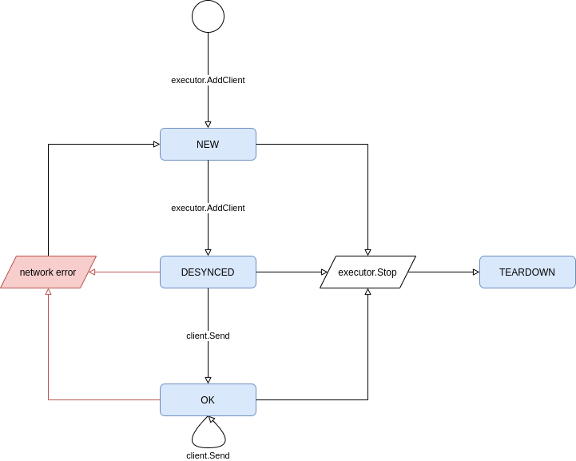

Client Disconnect Handling in DownFlux
Client-Server Networking Model for a Large-Scale RTS
| Status | draft |
|---|---|
| Author(s) | minke.zhang@gmail.com |
| Contributor(s) | |
| Last Updated | 2020-11-16 |
Goals
- handle client reconnects
- resolve game state cleanly
- deal with connection spam
- detect client / server network outages
Background
DownFlux is an ongoing open-source RTS game built from scratch (rather rashly). Because DownFlux is not built on top of any existing gaming engine, we need to design a way for client-server network connections to be resilient to network flakiness.
Overview
Downflux is using a client-server model approach for networking, with gRPC serving as the API layer. The client issues player commands (Move, Attack, etc.) via blocking API, whereas the server passes game state change through a persistent stream. During the normal course of a game, it is possible that the client may experience transient network outages – this design doc focuses on one implementation of client disconnect / reconnect logic which can handle this in a graceful and scalable way.
StreamData API
The server communicates with the client via the StreamData RPC endpoint; each
message sent along this API contains a list of entities and a separate list of
curves, as well as the server time at which the message was generated. These
data points communicate the game state delta between subsequent points in
time; by merging all data messages, the client will have the complete game
state.
These messages are sent once per server tick. To save on bandwidth, a message will be sent only if a delta exists – if both the list of entities and curve deltas is empty, then the server will skip sending the message for that tick.
Game State Monotonicity
The monotonically increasing1 game state S may be totally represented by the set E of game entities and C the set of curves representing game metrics evolving over time. We represent the merging of an existing, valid game state with an incoming StreamData message as
S’ := S ∪ ΔS == (E ∪ ΔE, C ∪ ΔC)
The set of entities here is an append-only mathematical set, i.e. there are no duplicate elements. Because entities are uniquely identified by a UID, we can send along just the newly generated entities per server tick.
A curve is uniquely specified by its
- parent entity UID,
- the entity property this curve represents (e.g. location, health, etc.),
- and the last time the curve was updated by the server.
When we merge two curves, the data generated by the most recently-updated curve takes precedence – that is, if the older curve and newer curve have conflicting extrapolated data, we replace the older curve’s extrapolated data. If the newer curve does not have information on a specific time interval, we keep the older curve’s data. In this way, we can guarantee that the curve itself is idempotent under merge requests (of a specific destination curve), and the prediction of the curve over time becomes more accurate (since we’re merging only new predictions).
We can formalize these definitions as
S ≤ S’ ⇔ E ⊆ E’ ^ C ≤ C’
We can compare the curves by comparing the server tick.
Client Work
The game client will treat the incoming StreamData messages as game state
deltas and merge them into the local state via the process described above;
because the end user (player) of the client only cares about the current tick,
any data older than the current server tick may be thrown out2, and it’s
okay if the old data is invalid.
Therefore, we can see a framework for leveraging the game state delta as a game re-sync tool.
Detailed Implementation
Disconnect Detection
We can implement client / server disconnect detection via the gRPC
keepalive flags.
These may be specified on the server at start up time, and on the client at
connect time. gRPC supports heartbeat messages sent at specific intervals, and
allows the underlying channel to auto-close when a heartbeat timeout occurs.
Because this is handled at the gRPC layer, we may abstract that away in the
game executor.Executor instance, as long as we ensure that the gRPC server -
executor will always receive incoming StreamDataResponse messages, e.g. via a
server-local slice object per client.
Server
Once the client channel is closed, the client-side StreamData gRPC endpoint
will also terminate.
gRPC
The gRPC server on startup will set the flags specified in keepalive.md and the Golang module so that
- the client may periodically send keepalive messages;
- the server will send periodic keepalive messages; and
- there is a definite, non-infinite timeout for these server-initiated
keepalives, after which
- the gRPC stream will be closed, and
- the gRPC server will mark the underlying executor Client object as dirty, which then instructs the component to teardown the client channel and mark it as in need of a sync.
The gRPC server will implement a client-specific local message queue and listener Goroutine – these constructs will listen on the executor client channel and enqueue any messages sent along it, guaranteeing that the channel will never be blocked.
Executor
The executor will provide a StopClientStreamError function, which will be
used to teardown the client channel struct and mark the associated client as
out of sync with the game state.
Client State Metadata
The executor will model a client connection in the form of a transition diagram –
The executor will keep an executor-specific client metadata object, with a flow diagram as defined in Figure 1. A metadata object will store a Golang channel object, used to send data to the gRPC server.

Figure 1: Executor client flow diagram.
We are defining the states NEW, DESYNCED, OK, and TEARDOWN as follows:
- A client is in the
NEWstate when- the client is first created, or
- when a network error is detected while streaming game state.
In this state, the channel does not exist, and no data will be broadcasted to this client.
- A client enters the
DESYNCEDstate once a call to the gRPCStreamDataendpoint is made – in this state, the channel is created, and the client is marked as needing the full game state update. The executor will provide the appropriate data upon the next tick to the client channel. - A client is in the steady
OKstate once the full state has been sent. Future messages sent along this channel are state deltas, as defined above. - A client enters the
TEARDOWNstate once the game shuts down – at this point, the client may not reconnect, and the channel is permanently closed.
Resync
With our flow diagram, it becomes apparent that the client upon a server
disconnect will only need to reissue a StreamData gRPC call with its stored
internal client ID. The gRPC server will handle the reconnect by marking the
client as DESYNCED, just as it would have done upon the initial stream
request. The next message sent from the server will be the full game state.